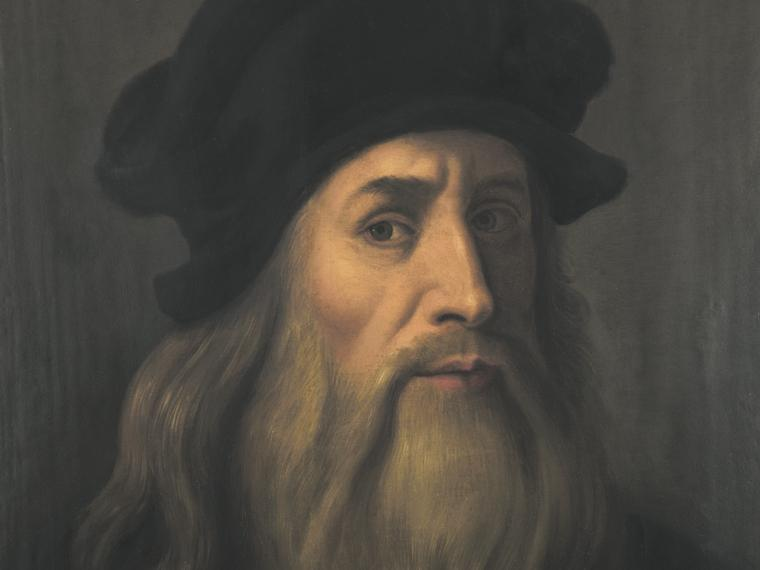
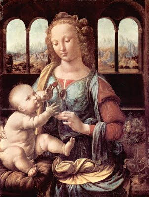
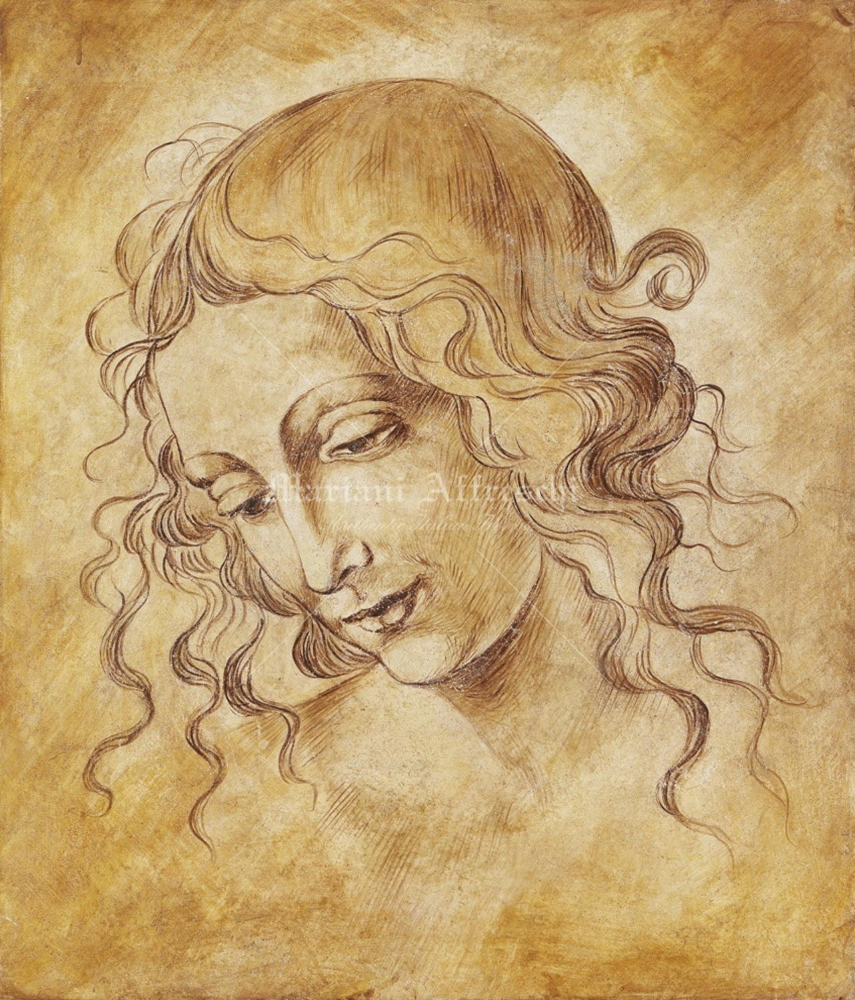
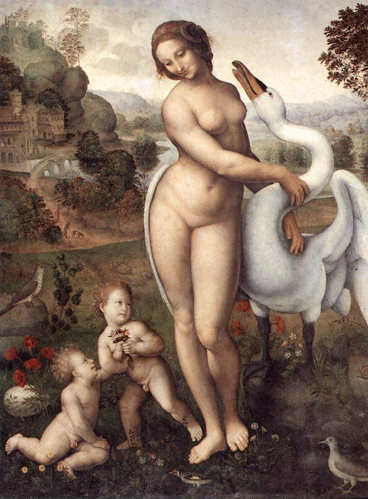

Volver a inicio
𝕃𝕖𝕠𝕟𝕒𝕣𝕕𝕠 𝔻𝕒 𝕍𝕚𝕟𝕔𝕚

Biografia
Leonardo nació en 1452 en la villa toscana de Vinci, hijo natural de una campesina, Caterina (que se casó poco después con un artesano de la región), y de Ser Piero, un rico notario florentino. Italia era entonces un mosaico de ciudades-estado como Florencia, pequeñas repúblicas como Venecia y feudos bajo el poder de los príncipes o el papa. El Imperio romano de Oriente cayó en 1453 ante los turcos y apenas sobrevivía aún, muy reducido, el Sacro Imperio Romano Germánico; era una época violenta en la que, sin embargo, el esplendor de las cortes no tenía límites.
A pesar de que su padre se casaría cuatro veces, sólo tuvo hijos (once en total, con los que Leonardo entablaría pleitos por la herencia paterna) en sus dos últimos matrimonios, por lo que el pequeño Leonardo se crió como hijo único. Su enorme curiosidad se manifestó tempranamente: ya en la infancia dibujaba animales mitológicos de su propia invención, inspirados en una profunda observación del entorno natural en el que creció. Giorgio Vasari, su primer biógrafo, relata cómo el genio de Leonardo, siendo aún un niño, creó un escudo de Medusa con dragones que aterrorizó a su padre cuando se topó con él por sorpresa.
Consciente del talento de su hijo, su padre le permitió ingresar como aprendiz en el taller de Andrea del Verrocchio. A lo largo de los seis años que el gremio de pintores prescribía como instrucción antes de ser reconocido como artista libre, Leonardo aprendió pintura, escultura y técnicas y mecánicas de la creación artística. El primer trabajo suyo del que se tiene certera noticia fue la construcción de la esfera de cobre proyectada por Brunelleschi para coronar la iglesia de Santa Maria dei Fiori. Junto al taller de Verrocchio, además, se encontraba el de Antonio Pollaiuolo, en donde Leonardo hizo sus primeros estudios de anatomía y, quizá, se inició también en el conocimiento del latín y el griego.
Joven agraciado y vigoroso, Leonardo había heredado la fuerza física de la estirpe de su padre; es muy probable que fuera el modelo para la cabeza de San Miguel en el cuadro de Verrocchio Tobías y el ángel, de finos y bellos rasgos. Por lo demás, su gran imaginación creativa y la temprana pericia de su pincel no tardaron en superar a las de su maestro. En el Bautismo de Cristo, por ejemplo, los inspirados ángeles pintados por Leonardo contrastan con la brusquedad del Bautista hecho por Verrocchio.
El joven discípulo utilizaba allí por vez primera una novedosa técnica recién llegada de los Países Bajos: la pintura al óleo, que permitía una mayor blandura en el trazo y una más profunda penetración en la tela. Además de los extraordinarios dibujos y de la participación virtuosa en otros cuadros de su maestro, sus grandes obras de este período son un San Jerónimo y el gran panel La adoración de los Magos (ambos inconclusos), notables por el innovador dinamismo otorgado por la destreza en los contrastes de rasgos, en la composición geométrica de la escena y en el extraordinario manejo de la técnica del claroscuro.
Obras de Leonardo Da Vinci

La Gioconda |

La Virgen de Clavel |

La Scapigliata |

La Dama de Armiño |

Leda y el Cise |